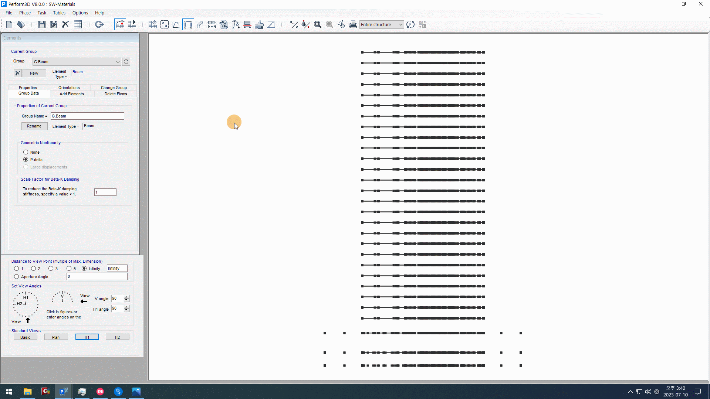

Frame은 Midas Gen의 Active와 비슷한 역할을 합니다. 노드와 부재가 많은 경우, Frame을 만들어서 필요한 노드와 부재만 Active하여 모델링이 가능합니다.
그러나 Midas Gen의 Active 기능에 비해 매우 불편하고 Frame이 없이도 모델링이 불가능하진 않기 때문에, 사용자에 따라 필요한 Frame만 설정하여 사용하는 경우도 있습니다.
또한 건물의 규모가 작다면 Frame을 사용하지 않고 모든 노드와 부재에 접근할 수도 있습니다.
그럼에도 불구하고 Frame을 사용하는 것이 다방면에서 편리하기 때문에, Frame을 사용하는 것을 권장합니다.
이름만 입력된 비어있는 Frame을 먼저 생성한 후, 비어있는 Frame에 노드와 부재를 추가합니다.
What to do
Add or Delete Frames를 클릭합니다. 생성된 창에서 New를 클릭합니다.

Data Conversion Sheets의 Input_Naming 시트를 확인합니다. 이 시트의 Frame 열에 생성된 가장 첫 열, 첫 행의 이름을 Perform-3D에 입력합니다.
입력한 후에 OK를 클릭하면 비어있는 Frame이 생성됩니다.
같은 방법으로 Frame 열에 생성된 이름을 첫번쨰 열부터 차례대로 모두 입력합니다. 다만, 모델링에 필요없다고 판단되는 경우에는 생성하지 않아도 됩니다.
모든 Frame이 생성되면, Frame에 해당하는 노드와 부재를 추가하기 위해 View 창에서 Plan을 클릭합니다.
팁
Frame의 이름을 입력하는 과정은 어렵지 않으나, 생성해야할 Frame의 수가 많은 경우에는 많은 시간, 노동, 실수가 동반될 수 있습니다.
이를 방지하기 위해, Frame의 이름을 입력하는 과정을 자동화하는 방법을 소개합니다.
이 방법은 이 후에 진행될 Section 이름 입력, Property Check & Save 과정 등에서도 활용이 가능합니다.
Frame의 이름을 자동으로 입력하기위해 사용할 소프트웨어는 key_macro 입니다.
마우스 또는 키보드의 조작 방법과 순서를 명령문으로 기록하면, 인간이 직접 조작하는 것과 동일하게 key_macro가 마우스와 키보드를 조작합니다.
key_macro를 실행합니다.
먼저 매크로 속도를 변경합니다. 매크로 속도가 너무 빠르면 오류가 자주 생기고, 너무 느리면 시간이 오래 걸리기 때문에 적절한 속도를 찾아야 합니다.
매크로 속도는 설정을 클릭하고 매크로 이벤트 실행 주기를 변경하여 설정할 수 있습니다. 70밀리초로 설정하는 것을 권장드리고, 사용자의 필요에 따라 변경합니다.
사용자가 직접 엑셀의 이름을 복사하고 Perform-3D에 붙여넣는 일련의 순서를 조금 더 자세히 나열해 보겠습니다.
(엑셀 창 클릭) 엑셀에서 이름 Ctrl + C (Perform-3D 창 클릭)
Perform-3D에서 New 버튼 클릭 이름 Ctrl + V
Perform-3D에서 OK 버튼 클릭
입력할 Frame 개수만큼 반복
위의 과정을 매크로 명령문에 순서대로 작성합니다.
Perform-3D를 원격으로 실행하는 경우, 엑셀 창 또는 원격데스크톱 창을 클릭하여 활성화하는 과정이 없으면 매크로 명령문이 정상적으로 작동하지 않습니다.
따라서 엑셀을 먼저 활성화하기 위해 Data Conversion Sheets의 제목표시줄을 클릭하는 명령을 작성합니다.
마우스 추가를 클릭합니다.
마우스를 움직이면 새로 생성된 창에 마우스의 좌표가 실시간으로 표시되고, F10을 누르면 마우스의 좌표가 기록됩니다.


{kind=link}
{kind=link}
{kind=link}
{kind=link}
{kind=link}
{kind=link}
{kind=link}
{kind=link}
{kind=link}
{kind=link}
{kind=link}